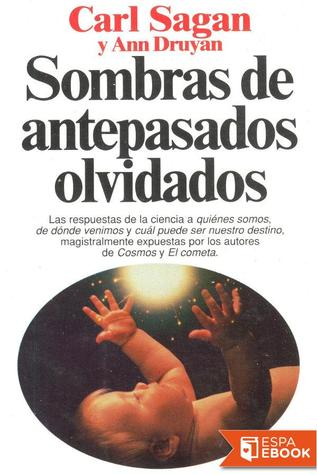

Sombras de Antepasados olvidados
Reseña por Jorge I. Zuluaga

Ver reseña en GoodReads (necesita cuenta)
La mayoría pensará que estoy exagerando, que esta es otra de esas generalizaciones producto de mi reverencia casi religiosa por el irrepetible Carl Sagan o de mi ahora profunda y pública admiración por Ann Druyan, que debo confesar solo descubrí hasta ver las últimas temporadas de la serie Cosmos, escritas por ella y que me demostraron que incluso la serie original de los años 80 tiene más Druyan de lo que pensaba (hoy lamento mucho mi tardío descubrimiento).
Pero no.
Yo tampoco esperaba llegar a la conclusión con la que comienzo esta reseña antes de empezar a leer el libro.
Solo al terminarlo me di cuenta de lo importante que, incluso para mí, que me preciaba de tener una buena educación científica sobre los temas de los que trata el libro, ha terminado siendo esta obra.
No es que piense que no podría educarme más, mucho menos en áreas que no son de mi especialidad, pero el nivel de lo aprendido en este libro trasciende la instrucción científica elemental. O mejor, y como señalo desde el principio, debería ser parte fundamental de la instrucción científica de niños y jóvenes.
"Sombras de antepasados olvidados" es, en pocas palabras, y así lo subtitularía, una guía básica para entender el verdadero lugar de los humanos en la historia de la vida.
Y recalco los humanos y no los "hombres" como se repite insistentemente en muchas páginas del libro, por lo menos en la traducción al castellano que yo leí (aunque, sin comprobarlo, estoy seguro de que en la edición en inglés también decían men en lugar de humans).
Esta es una pelea perdida, lo sé, pero me pregunto: ¿hasta cuándo vamos a seguir usando como genéricos de nuestra especie las palabras que empleamos para referirnos, tanto en singular como en plural, a los machos de nuestra especie? Si incluso un buen libro de ciencia, escrito por dos pensadores profundos, representantes de ambos sexos, sigue hablando de "la evolución del hombre" o de que "los hombres somos como otros animales", ¿cómo podríamos siquiera esperar que estos arcaísmos patriarcales dejen de usarse en el lenguaje culto de la prensa o la literatura? ¡Por favor! No es la "evolución del hombre", es "la evolución humana"; "los hombres tenemos diferencias solo de grado con otros simios" es "los humanos tenemos diferencias solo de grado con otros simios".
Pero dejando los "molinos semánticos" (seguro muchos sesudos académicos de la lengua tendrán todas las razones para demostrar que estoy equivocado) y volviendo al libro, es interesante señalar que el texto fue escrito hacia principios de los años 90 y aunque mucha agua ha corrido debajo del "puente" de las ciencias en las que se fundamenta la mayor parte de su contenido (genética, evolución, etología, primatología, psicología cultural, sociología y hasta astrobiología —una disciplina que el mismo Sagan ayudó a "fundar" en un tiempo en el que nadie daba un peso por abordar un estudio más amplio de la vida en el universo—), aún así, y confesando que no soy un experto en ninguna de esas disciplinas científicas (a excepción de los aspectos astronómicos y planetarios de la astrobiología, que Druyan y Sagan también abordan en el libro), debo decir que las conclusiones generales de todos y cada uno de sus capítulos siguen siendo esencialmente correctas (¡o al menos esa es mi apuesta!).
La bibliografía del libro es apabullante. Pero no esperaría menos de un científico riguroso (pero a la vez profundo y romántico) como Carl Sagan, y tampoco, naturalmente, de la gran Ann Druyan, que trabajó en algunos proyectos científicos y de comunicación de la ciencia durante su vida, seguramente hasta asimilar, como cualquier científica, el ethos de la ciencia y con ella el respeto de fundamentar las afirmaciones en la literatura científica.
No hay casi ninguna afirmación, ni siquiera las más generales reflexiones, que no esté acompañada de una referencia a la literatura científica (naturalmente, a la literatura que se había escrito hasta ese momento). ¡Es impresionante!
Podría pasarse uno media vida tan solo revisando los artículos científicos citados por el libro y que sustentan las afirmaciones que son la sustancia del texto, afirmaciones que van desde el descubrimiento de que los humanos, con nuestra inteligencia tecnológica sofisticada y supuestamente "superior", estamos virtualmente incapacitados para manejar con la maestría que lo hacen los chimpancés las aparentemente sencillas herramientas que aquellos han inventado para sacar termitas de sus escondites; pasando por la concentración de materia orgánica en los océanos de la Tierra después del "bombardeo tardío" y antes de la aparición de los primeros organismos capaces de dejar una huella geológica reconocible, que el mismo Sagan y otro autor calcularon comparable con la concentración de un caldo de pollo (¡las sustancias orgánicas complejas llovían del cielo en aquel entonces!); hasta llegar a la idea de que las mismas sustancias químicas que nos impulsan al sexo nos llevan a la guerra y tal vez son necesarias para la creatividad artística.
Y así decenas, si no cientos, de afirmaciones científicas impactantes (¡al menos lo fueron para mí!) que presenta el libro.
Debo también señalar que leer el libro no es fácil.
Para disfrutar de las conclusiones más profundas, de los párrafos más bellamente escritos (que están normalmente al final de cada capítulo, como me hizo caer en cuenta Karlis, una amiga del club de lectura en el que nos "obligamos" a leer el libro), hay que pasar por muchas páginas de descripciones científicas, a veces muy sesudas, con los fundamentos biológicos necesarios para sustentar la argumentación central.
No digo que esté mal escrito. Al contrario, difícilmente se encontraría buena ciencia consignada con mejores frases. Pero tampoco hay que mentir diciendo que no hay párrafos que hay que leer dos o tres veces para entender completamente. Al menos a mí me pasó con frecuencia.
Pero ¿qué libro con un mensaje profundo no lo exige?
Mi recomendación: empiecen el libro con los últimos tres capítulos (capítulo 19 "¿Qué es lo humano?", capítulo 20 "El animal de dentro" y el 21 "Sombras de antepasados olvidados"); después pueden leer el resto en el orden en el que se presenta, incluyendo nuevamente los capítulos decisivos señalados.
Aunque esta parece una manera de arruinar el libro (muchas "sorpresas" de los primeros capítulos se presentan como hechos conocidos en esos capítulos finales) y ciertamente es una contradicción de la intención de los autores y editores, les aseguro que aligerará la "carga técnica" del libro, una carga que puede, injustamente, alejar a los lectores que esperan un texto más ligero.
Comencé este año a leer seriamente a Sagan (gracias a los amigos del club de lectura que me obligan a hacerlo) y hasta ahora ni una sola página me ha defraudado.
Hoy siento que todas y cada una de las páginas de "Sombras de antepasados olvidados" faltaban en mi vida. Espero, después de leerlo, ser un "animal humano" más consciente del lugar que ocupo en la gran historia de la vida en la Tierra. Pero, más importante aún, espero ser un animal más respetuoso de las otras conciencias con las que compartimos este planeta y de las que solo nos separa una enzima aquí, una enzima allá.